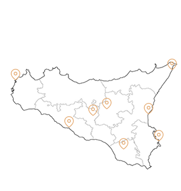

Palermo
La provincia di Palermo è il centro politico e culturale della Sicilia. Il suo capoluogo è famoso per i mercati storici, i monumenti arabo-normanni e le splendide piazze. Il territorio alterna mare, montagne e piccoli borghi ricchi di tradizioni.
Catania
La provincia di Catania è dominata dalla presenza dell’Etna, il vulcano attivo più alto d’Europa. Le sue città presentano un elegante stile barocco, nato dopo il terremoto del 1693. È una zona vivace, ricca di storia, cultura e panorami naturali.
Messina
La provincia di Messina si affaccia sullo Stretto che separa la Sicilia dalla Calabria. È conosciuta per i suoi paesaggi costieri e montani, oltre che per importanti tradizioni religiose. Il territorio comprende località turistiche molto apprezzate.
Da Agrigento a Enna
Le province di Agrigento, Caltanissetta ed Enna si trovano tra la costa meridionale e l’entroterra dell’isola. Sono ricche di siti archeologici, colline e paesaggi rurali. Qui si conservano antiche tradizioni legate alla storia greca e medievale.

Trapani
La provincia di Trapani offre un patrimonio naturale e culturale straordinario, caratterizzato da coste spettacolari, saline e panorami unici. Qui la storia si intreccia con la natura: dalle città storiche ai borghi pittoreschi, ogni angolo racconta la tradizione e la bellezza della Sicilia occidentale.
Da Ragusa a Siracusa
Le province di Ragusa e Siracusa sono famose per il loro patrimonio artistico e barocco. Tra città barocche, siti archeologici e coste incantevoli, queste zone rappresentano alcune delle mete più affascinanti della Sicilia orientale. Tradizioni, mare e storia si fondono creando un’esperienza unica per i visitatori.